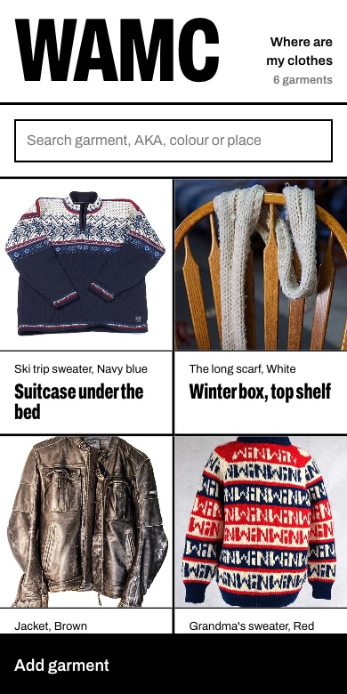
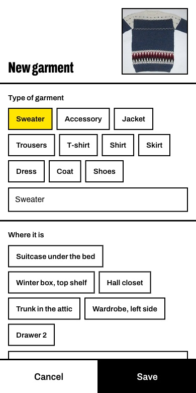
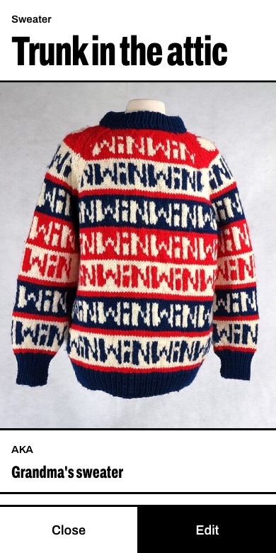
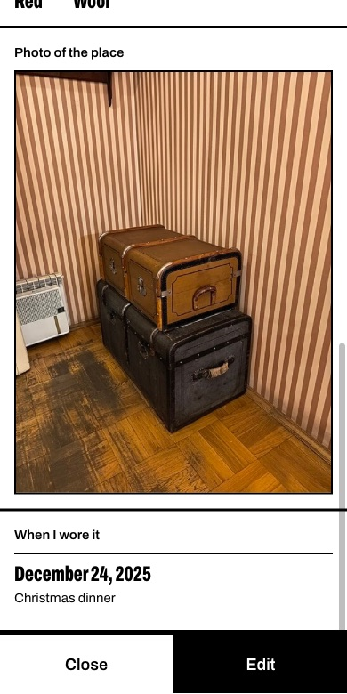
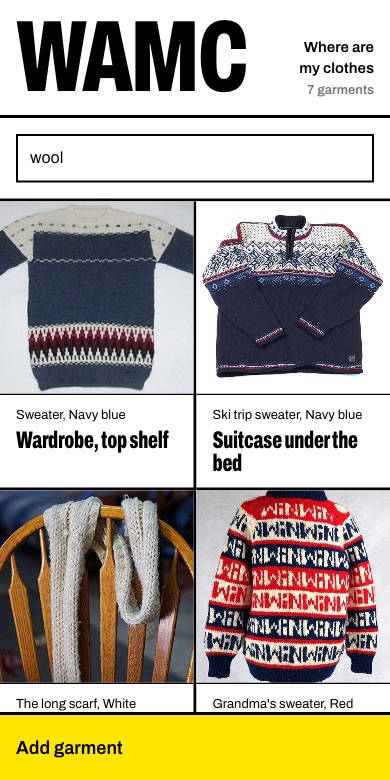

WAMC · Where Are My Clothes
A phone app that remembers where each garment is kept. I photograph it, write where it goes, and later search instead of opening every drawer.
Sample clothes, runs in your browser, nothing is saved.
The journey





Design
Black ink on white paper, heavy rules, one condensed typeface, and yellow only for what needs attention. It is made for one hand on a phone: every button is at least 44 pixels tall, and text fields use 16-pixel type so the iPhone does not zoom in.
Scope
One person, one wardrobe. It is a web page, so there is no app store and nothing to install. It keeps up to 2,000 garments, each with up to 200 dates of use. It does not plan outfits, share with other people or work offline.
How it is built
- The pageOne HTML file with plain JavaScript: no framework and no build step. Photos are shrunk on the phone before they are sent.
- The serverOne PHP file on ordinary shared hosting.
- The dataNo database. The list is a JSON file, written under a file lock so two saves cannot collide. Photos sit in a folder the web cannot open, and only a signed-in phone gets them.
- The lockOne password, stored hashed. The first visitor after installing chooses it. Five wrong tries lock the app for 15 minutes, and a sign-in lasts 90 days.
- The demoThe same page in English, with the server swapped for a pretend one inside the page, so anyone can try it without seeing my real wardrobe.
Photo credits
The sample photos in the demo come from Wikimedia Commons.
- White T-shirt, Juandev, CC BY-SA 3.0
- Patterned sweater, unknown author, public domain
- Norwegian sweater, Menswear Market, CC BY 2.0
- Jeans, Durova, CC BY-SA 3.0
- Leather jacket, kreativgarasch, CC0
- White scarf, cogdogblog, CC0
- Navy sweater, AWASQA MAKI, CC BY-SA 4.0
- Red leather jacket, Gaurav Dhwaj Khadka, CC BY-SA 4.0
- Dark jeans, Jane Mejdahl, CC BY-SA 2.0
- Closet, Aavindraa, CC0
- Walk-in closet, Infrogmation of New Orleans, CC BY-SA 3.0
- Trunks, Александровы АГ, CC BY-SA 4.0
- Drawers, Intothewoods29, public domain
- Suitcase, ArtSkillCraft, CC BY-SA 3.0